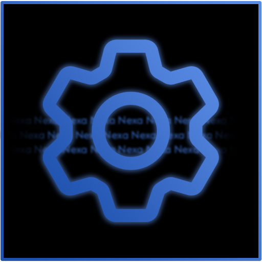

Minecraft servers. Your way.
A Python-based Discord bot for Minecraft server orchestration. Start, stop, and manage your servers without leaving Discord.
Download Latest Release
I hated Minecraft servers as much as I loved them.
Nexa was born out of frustration with the state of Minecraft server management. Back in 2022, myself and a group of friends decided we wanted to run a Minecraft server for the friend group. We wanted a modded server, but we also wanted to play on a server for cheap.
Looking at hosting options, we found that most of them were either expensive, unreliable, or both. The only hoster we found that fit the bill was Exaraton. It had great features, lower-cost, and a good reputation... but it was still expensive.
This naturally led to the question: "Why not just host it ourselves?" We had a spare laptop and good internet. We went with hosting it ourselves. Notably, the following issues arose:
- We had to manually start and stop the server, which was a pain.
- We had to manually update the server, which was a pain.
- We had to manually manage backups, which was a pain.
- We had to manually manage mods, which was a pain.
- We had to wait for the hoster to actually get to the server to fix issues, which was a massive pain.
- We had to manually manage server restarts, which was a pain.
Worst of all? It didn't slot into our Discord server. We were stuck with a fragile system that had us at its mercy. We wanted a better way to manage our server, and we wanted it to be a part of our Discord server.
The problem with existing Minecraft server solutions
Bluntly? They suck. The existing solutions, especially for homelab users, are either expensive, utterly confusing, or both.
Let's take a look at Pterodactyl, one of the most popular Minecraft server management solutions. It's a web-based panel that lets you manage your servers, and it is very involved.
Pterodactyl demands a lot of setup and configuration before it can actually work. This includes things like setting up a web server, a database, Wings, etc. Ironically, the easier part of Pterodactyl is setting up Minecraft. That should be the other way around. Minecraft should be the harder part, and the panel should be easier.
So, I went with making my own solution.
Enter Nexa
Nexa is a Python-based Discord bot that lets you manage your Minecraft servers from within Discord. It is designed to be easy to use, and it is designed to be easy to set up. It is designed to be a solution for homelab users, and it is designed to be a solution for people who want to manage their servers without having to deal with the complexities of existing solutions.
Nexa is designed to mesh into your workflow, let you configure your Minecraft server, and then manage it from within Discord. It comes with a status embed, management commands, user trust system, automatic modpack installer, and more. It is designed to be the best solution for self-hosters, as well as the easiest solution to carry your setup in the long run.
What can Nexa do?
Nexa lets you manage your Minecraft servers from within Discord. It lets you start, stop, lock, unlock, and remotely execute commands on your server securely. Nexa can also automatically install modpacks for you. You can also let Nexa automatically backup your world.
Nexa has a trust system that lets you explicitly define users who can manage your server. This trust system is called "Super User". You list exact discord user IDs in the immutable config, and Nexa will only allow those users access to commands that are Super User only. You can also tell Nexa to only allow interactions from a specific Discord server, as an additional security feature.
Nexa can watchdog your Minecraft server instance, restart it on crash, idle-mode the server when no players are online, shut it down automatically for you, and more.